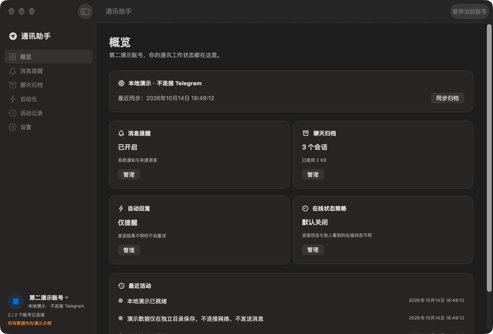

多个账号，各自工作
头像与名称切换账号。提醒、归档、设备信息和回复规则分开保存，切换页面不会停止其他已登录账号。
系统权限和登录启动全应用共用原生 macOS · Apple Silicon
重要消息及时提醒，工作记录按需保存。
多个账号独立运行，回复规则由你自己决定。

从消息到记录
一套原生界面完成设置，不用 Docker，也不用编辑环境变量。
头像与名称切换账号。提醒、归档、设备信息和回复规则分开保存，切换页面不会停止其他已登录账号。
系统权限和登录启动全应用共用私聊和群提及触发系统通知，可选来源语音、正文预览和静音时段。同会话连续消息合并提醒。
点击通知定位对应账号与消息文字、可选图片、编辑与删除状态。关键词、日期和发送者检索，查看上下文，按范围导出或备份。
默认不归档；本地备份当前未加密先预览，再开启
选择机器人或明确允许的普通联系人，填写要匹配的提示和固定回复；也可以沿用查岗提示里的动态关键词。
每账号当前一个对象，仅直接私聊；不支持群聊自动回复、自由正则或脚本。
日常使用
按 Telegram 流程完成登录，确认本人账号。自定义 API 在高级设置。
测试提醒、勾选归档会话。自动回复先保存为仅提醒，检查实际回复内容。
关闭窗口继续运行，随时暂停或查看状态。退出应用会停止全部账号。
内部测试版
Apple Silicon · 声明最低 macOS 14
已在本机 macOS 27 验证，干净旧系统仍待验收。
安装包公开下载，无需 GitHub 登录。当前为临时签名、未公证的测试包，内置已授权的官方 TEST ONLY 配置；正式产品 API 尚未就绪。
使用边界
有内置配置的安装包只需登录 Telegram；自定义 API 放在高级设置。当前内部包使用官方测试配置，正式产品 API 待完成。
睡眠、合盖、退出应用或网络不可用时不能实时处理。可选防闲置睡眠不能覆盖主动睡眠或合盖，恢复后按时限规则处理新提示，不补发重启前旧消息。
不会。新对象或规则先保存为仅提醒，预览并确认后才启用。重启或身份恢复后，逐账号确认并重新开启。固定回复默认本地有效期 5 分钟，可自定义。
编号模式需要匹配同编号登记回执。固定回复当前没有通用回执解析，只显示“已发送，登记未核实”，需要在原会话确认实际业务结果。
资料保存在本机，按账号隔离，不上传到产品云端。Telegram 连接仍访问其服务。会话和 API 不随普通备份导出，本地备份未加密，源码仓库不包含真实消息和凭据。
打开 DMG，把应用拖到“应用程序”。升级前退出应用再替换，保留用户资料。详细操作和验证范围随 Release 提供；Intel、自动更新、正式签名及公证尚未完成。